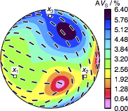
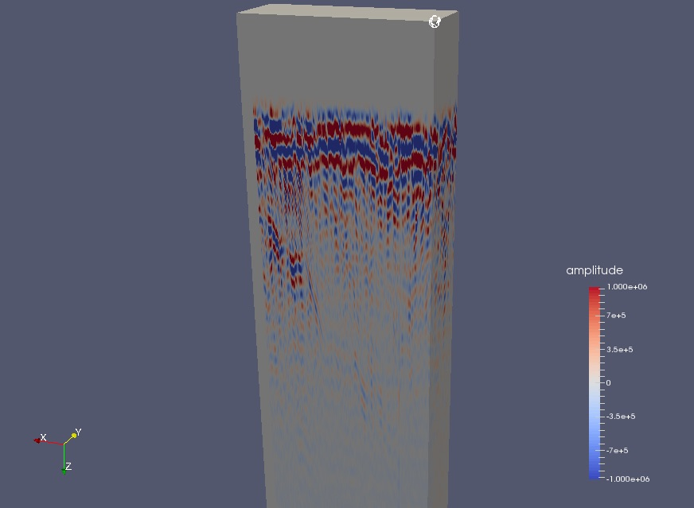

|
Andy Nowacki |
|
Software available to the community
I maintain several software packages which provide functionality which may be useful to the geophysicist. Most codes rely on GMT for plotting. I have tried to document the software, but there are gaps and functionality may be incomplete. I’m afraid I cannot offer any support for these, but if you make any improvements, send me a pull request and may be able to incorporate your changes into the codebase.
The following codes are hosted at my GitHub pages:
-
Geophysics utility routines
General utility modules for dealing with various geophysical problems, including:
- anisotropy_ajn.f90, for dealing with anisotropic sets of elastic constants
- global_1d_models.f90, for getting 1D Earth properties from PREM and AK135
- plate_motion.f90, to compute absolute and relative plate motion from various models
- spherical_splines, allowing fitting of arbitrary functions onto spherical B-splines
- splitwave, modelling shear wave splitting in anisotropic media along precomputed ray paths
-
Elasticity – Anisotropic modelling on the command line
Making use of seismo-fortran, this repo gives contains many small command-line programs for manipulating and plotting first-order general elastic constants.
3D view of the shear wave splitting produced by a kimberlite as given by Ben Ismaïl and Mainprice, Tectonophysics, 1998, produced using CIJ_plot from the repo.
-
CIJ.jl – Anisotropy in Julia
A Julia package to deal with elastic constants for geophysics problems.
-
SAC.jl – Manipulate Seismic Analysis Code files in Julia
A Julia package to deal with seismic data in the SAC format. Accompanying package SACPlot.jl provides plotting for SAC traces.
-
f90rad3 – Command-line GPR
Fortran codes to deal with RAD3-format data as produced by, for example, Malå ground-penetrating radar units. Many proprietary or graphical programs exist for processing such data, but few offer any automated way to create plots and filter the data. These codes aim to make that process easier.
Output options include making sections and writing to NetCDF for visualisation in your 3D program of choice (such as Paraview).
3D GPR volume, viewed in Paraview, and created by f90rad3.
Other utilities
Alongside explicitly scientific software, I also maintain a few small utility configuration files, and so on.
-
JuliaUnicode.tmbundle
Plugin to TextMate 2 allowing one to use LaTeX symbol names and tab-completion to insert Unicode characters when editing Julia source files.